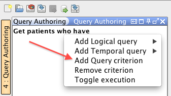
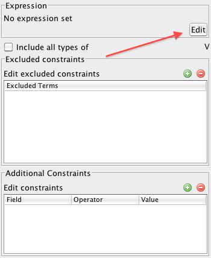
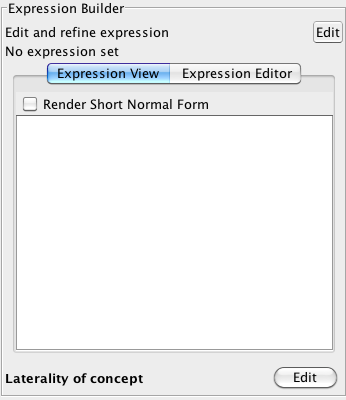
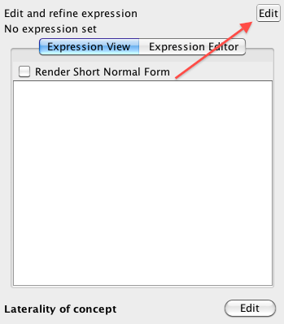
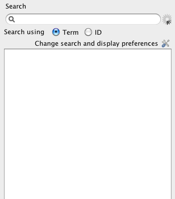
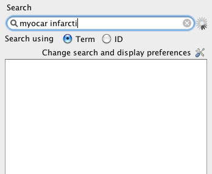
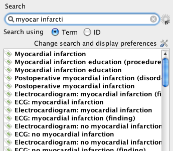
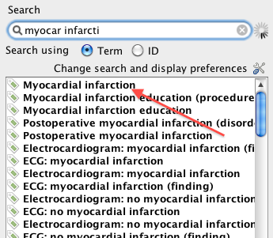
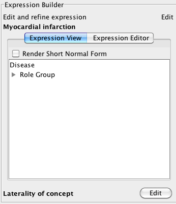
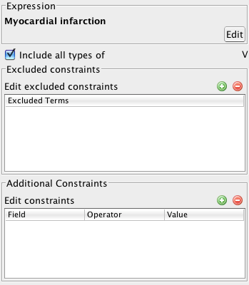

SNOMED CT, Java and MySQL are registered trademarks
This section describes how to create a new query in Snofyre.
-
A new query can be created in any of the following ways:
- Select .
- Click the New Query button
 on the toolbar.
on the toolbar.
CAUTION:This action will result in the loss of any modificiations that the user might have made to an existing query, already loaded. -
Right click Get patients who have stub in the Query
Authoring Panel.
The same effect can be achieved by a combination of Crtl button and left click on the Windows platform and
Cmd button and left click on the Mac platform.
This results in appearance of the query creation pop up
menu shown below.

-
In the query creation pop up menu, click on Add Query Criterion as shown below.
This displays a dialog as shown below.

-
In this dialog, click on the Edit button as shown
below.
This displays a dialog as shown below.


-
In this dialog, click on the Edit button as shown
below.
This brings up a search box in the dialog, as shown below.


-
In the search box, type the text to search for, as shown below.
-
In the search box, type the text to search for, as shown below.
Tip: You do not need to type in the entire word/phrase, to bring up results in Snofyre. You can use the first few characters of a term to bring up relevant matches. The example below shows this functionality for Myocardial Infarction.

- Press the Enterkey on your keyboard to return matches.

-
In the search box, type the text to search for, as shown below.
-
In this list, double click on the most appropriate result shown below.
This closes the search box and displays the selected concept in the original dialog, as shown below.


-
Dismiss this dialog, by closing it.
This closes the dialog and takes us back to the query criterion dialog,
shown below.

- Dismiss this dialog, by closing it. This closes the dialog and updates the query in the Query Authoring Panel and the Active Query Panel.
- It should now be possible to save or execute the newly created query.